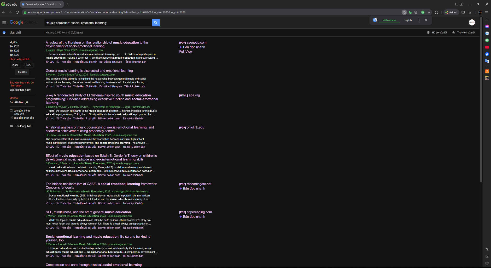

Không chỉ tìm tài liệu: học cách phân biệt bằng chứng khoa học, báo cáo chính sách và nhận định chuyên môn.
Chủ đề nghiên cứu
Vai trò của giáo dục âm nhạc đối với sự phát triển cảm xúc – xã hội của trẻ em và học sinh. Phạm vi: học sinh trong môi trường giáo dục, chú trọng cảm xúc, khả năng hợp tác và sự thích nghi xã hội.
Chiến lược tìm kiếm
Từ khóa và công cụ
Google Scholar:"music education" "social emotional learning"
Toán tử nâng cao:"music education" AND (emotion OR resilience), site:pmc.ncbi.nlm.nih.gov music children socioemotional.
Đối chiếu nguồn xuất bản, tác giả, phương pháp, thời điểm công bố và giới hạn nghiên cứu.

Kết quả tìm kiếm tài liệu học thuật trên Google Scholar.
10 nguồn học thuật và chuyên môn
01 · Campayo-Muñoz & Cabedo-Mas (2017)
The role of emotional skills in music education
Bài báo khoa học
Nghiên cứu về kỹ năng cảm xúc trong giáo dục âm nhạc; cần đọc toàn văn để xác định thiết kế và giới hạn.
Nghiên cứu về kỹ năng cảm xúc trong giáo dục âm nhạc; cần đọc toàn văn để xác định thiết kế và giới hạn.
2
Tổng quan hệ thống
Cao (cần kiểm tra phương pháp)
Tổng hợp nghiên cứu về âm nhạc và phát triển cảm xúc; có phạm vi tuổi cụ thể.
3
Bài báo khoa học
Cao (cần kiểm tra phương pháp)
Kết quả có tính chọn lọc; không thể suy ra âm nhạc cải thiện mọi kỹ năng cảm xúc – xã hội.
4
Nghiên cứu bán thực nghiệm
Cao (cần kiểm tra phương pháp)
Không tìm thấy hiệu ứng can thiệp có ý nghĩa thống kê trong thời gian nghiên cứu; cần tránh kết luận quá mức.
5
Thử nghiệm thăm dò
Cao (cần kiểm tra phương pháp)
Mẫu và bối cảnh đặc thù; hữu ích cho giả thuyết, chưa đủ để khái quát rộng.
6
Tài liệu chính sách
Khá (theo uy tín tổ chức, loại tài liệu)
Nguồn tổ chức quốc tế, định hướng triển khai giáo dục nghệ thuật; không thay thế nghiên cứu thực nghiệm.
7
Báo cáo
Khá (theo uy tín tổ chức, loại tài liệu)
Nguồn cơ quan công, phạm vi nghệ thuật rộng hơn riêng âm nhạc.
8
Báo cáo
Khá (theo uy tín tổ chức, loại tài liệu)
Bằng chứng về tham gia nghệ thuật ở tuổi nhỏ; cần phân biệt nghệ thuật nói chung với âm nhạc.
9
Bài viết chuyên môn
Khá (theo uy tín tổ chức, loại tài liệu)
Phù hợp để tham khảo bối cảnh; không phải bài báo phản biện khoa học.
10
Tổng hợp tài liệu
Khá (theo uy tín tổ chức, loại tài liệu)
Cung cấp góc nhìn tổng hợp; cần kiểm tra độ mới của nghiên cứu được dẫn.
Nhận xét phản biện
Không nên xem mối liên hệ giữa giáo dục âm nhạc và cảm xúc – xã hội như quan hệ nhân quả đã được chứng minh ở mọi bối cảnh. Kết quả nghiên cứu khác nhau về thiết kế, thời lượng can thiệp, độ tuổi và chỉ số đo lường. Các nghiên cứu có kết quả không có ý nghĩa thống kê vẫn cần được trình bày để tránh thiên lệch xác nhận.
Danh mục tham khảo và AI
Các tên tài liệu và đường dẫn được liệt kê ngay trong 10 thẻ nguồn phía trên. ChatGPT được dùng để hỗ trợ hệ thống hóa, diễn đạt và trình bày; việc kiểm chứng nguồn và kết luận học thuật vẫn cần đối chiếu với bài gốc.